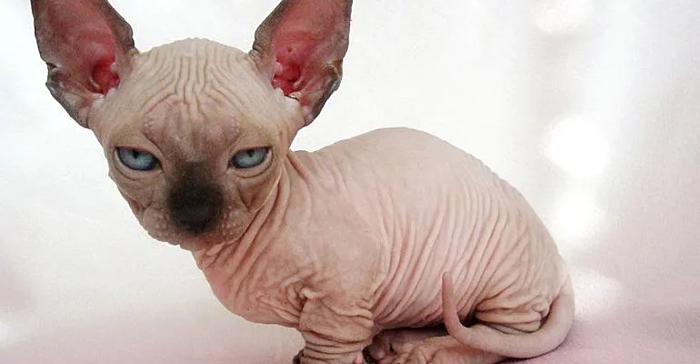

Эта страница про Сфинкса
Видео про Сфинксов
Звуки Сфинкса
Место памятника кошки
В 1966 домашняя кошка родила голого котенка в Торонто, Канаде. Это, как выяснилось, было естественной мутацией и в результате появился сфинкс — такой, каким мы его теперь знаем. Этот кот и несколько других естественно лысых котов и кошек были обнаружены во всем мире. Они и составили фонд для развития этой необычной породы. В течение больше чем тридцати лет заводчики кошек в Европе и Северной Америке скрещивали сфинксов с другими неголыми кошками (обычно с девон-рексами), а затем снова с лысыми. Цель этой селекционной работы состояла в том, чтобы создать генетически сильную кошку с большим гибридным потенциалом. При правильном разведении сфинкс — очень крепкая порода с малым количеством серьёзных заболеваний или генетических проблем[1]. Канадские сфинксы не полностью голые, у них существуют разные степени «лысости». Это может быть тонкий пушок, делающий кошку на ощупь напоминающей персик. Отдельные короткие волоски обычно присутствуют на носу, ушах и, иногда, на пальцах и хвосте. Сезонные и гормональные изменения могут также влиять на состояние шерсти[1].
Несмотря на отсутствие шерсти, у Канадских сфинксов возможны окрасы любых цветов и рисунков на любом возрастном этапе. Окрас и/или рисунок кошки видны в пигменте кожи и нескольких присутствующих волосках. Один из наиболее часто задаваемых вопросов о сфинксах: «Не мёрзнут ли они?». Ответить несложно — если вам холодно, то, вероятно, будет холодно и для безволосой кошки. Тем не менее, эти кошки достаточно умны, чтобы найти тёплое место в доме, свернувшись калачиком с собакой, кошкой или тёплым человеком[1].
Канадские сфинксы — это кошки среднего размера, довольно крепкие, не хрупкие. Как и у большинства других пород кошек, взрослые коты крупнее кошек. У сфинкса крепкие кости, хорошо развитые мышцы и твёрдый живот, как будто кошка только что поела. У них открытые глаза, умное выражение лица. Складки на голове, как некоторым кажется, придают обеспокоенное, пытливое выражение. Сфинксы чрезвычайно милы, очень общительны и в своих попытках привлечь внимание могут выполнять различные, но порой неуклюжие, трюки. Они обладают огромной энергией и бывают вредны, всегда хотят быть рядом с хозяином или хотя бы на виду. Сфинксам нравится человеческое внимание, но также они могут наслаждаться компанией собак и других кошек[1].
Из-за отсутствия шерсти, которая обычно поглощает кожное сало, сфинксы нуждаются в периодическом купании, чистке ушей и ногтей. Купать Сфинкса не сложно, так как большинство кошек ещё в котятах привыкли к мытью и прочим процедурам ухода у своих заводчиков. Некоторые люди, которые страдают от аллергии на кошек, могут без последствий держать у себя Сфинксов. Это связано с тем, что в воздухе нет шерсти, а химический реагент в их слюне ниже, чем у других пород. Регулярное купание также снижает образование перхоти. Однако, в зависимости от типа и тяжести индивидуальных аллергических реакций, далеко не все аллергики могут безболезненно переносить Сфинксов[1].
В Cat Fanciers Association (CFA) Сфинксы были допущены к соревнованиям в чемпионском классе в феврале 2002 года. Сейчас это одна из наиболее популярных пород. Из-за редкости кошек с такой необычной внешностью у большинства заводчиков есть очередь на будущих котят.
Цены на сфинксов обычно зависят от типа, здоровья, индивидуальных особенностей и родословной, а также от происхождения, которое различается по имеющимся наградам у предков. Рекомендуется, забирать у заводчика котят в возрасте не ранее 12-16 недель , чтобы обеспечить завершение всех прививок, физического развития и социальной стабильности, необходимых для смены домашней обстановки, выставок или транспортировки. Хорошей идеей будет проверка здоровья котенка у ветеринара - до того, как вы решите его забрать. Авторитетный заводчик также предоставит результаты предыдущих проверок здоровья отца и матери котят. Котята сфинкса нуждаются в хорошем рационе с высоким содержанием белка для оптимального здоровья. Сфинксы, как и большинство кошек, имеют естественное желание царапать, поэтому следует обеспечить кошку местом, где она сможет точить когти (например, столбик-когтеточка)[1]. Царапанье — действие инстинктивное и, если его запретить, кошка испытывает чувство неудовлетворенности[2]. CFA и Sphynx Breed Council (Совет породы сфинкс) не одобряют и не рекомендуют операцию по удалению когтей или тендонэктомии для любой кошки. Сфинксы — действительно редкое сокровище, и их следует содержать в помещении, кастрировать или стерилизовать, а также предоставить любящую и игровую обстановку, чтобы поддерживать здоровую, долгую и приятную жизнь.
